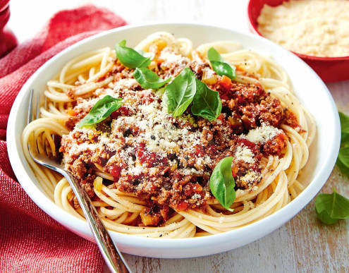

Spaghetti bolognese

Description
Recipe passed on from my Italian grandfather. The ultimate comfort food. Leftovers freeze nicely!
To make this recipe more authentic, you can use a mixture of ground veal, pork, and beef.
You can also substitute the balsamic vinegar for 1/2 cup of red wine.
Ingredients
- 1 (16 ounce) package spaghetti
- 2 tablespoons olive oil
- 3 slices bacon, diced
- 1 large onion, finely chopped
- 1 stalk celery, finely chopped
- 1 carrot, finely chopped
- 1 teaspoon dried oregano
- 3 cloves garlic, minced
- 1 pound lean ground beef
- 2 tablespoons balsamic vinegar
- 2 (28 ounce) cans crushed tomatoes
- 2 tablespoons tomato paste
- 2 teaspoons white sugar
- salt and ground black pepper to taste
- 2 tablespoons chopped fresh basil
- ¼ cup freshly grated Parmesan cheese